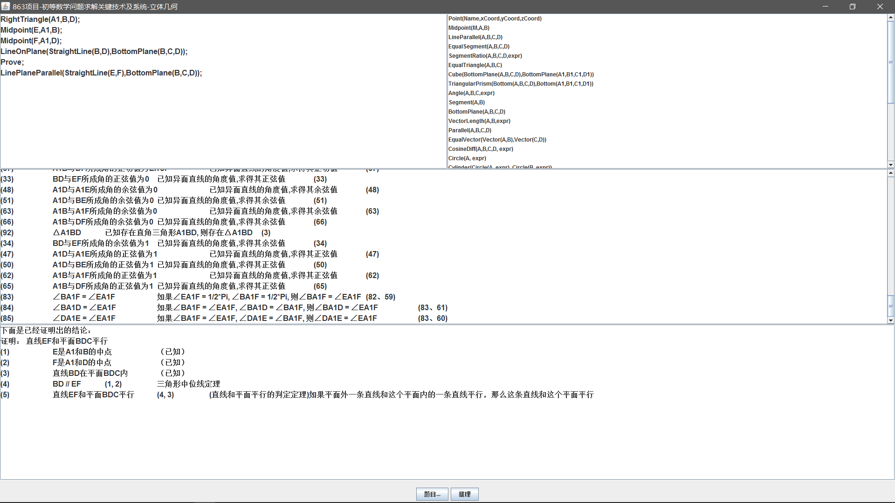

-
- Basic info. 基本信息
- 个人信息: 刘圳 / 男 / 21岁
- 本科: 2015-2019 / 广州大学计算机与教育软件学院
- 常用ID: Acring
- Blog: blog.acring.me
- 知乎: Acring
- GitHub: github.com/acring
- Echarts: http://gallery.echartsjs.com
1. 热爱技术，具有较强的学习能力，能快速学习一门新的语言或技术
2. 具有较强的实践能力，能利用所拥有的技术快速做出具有代表性的作品
3. 具有较强的创新意识，能做出具有创造性的作品
4. 善于团队协作，能高效完成团队任务，统筹团队人员分工和进度
5. 善于沟通，表达，具有丰富的与产品，用户沟通的经验
-
- Experience. 项目与工作经验
团队项目
-
校园NOC（2018.1-至今）
为深圳市南山区教育局打造面向深圳市中小学生在线竞赛活动发布和统计系统, 作为学生性格分析系统的一部分, 能在线发布比赛活动, 在线提交比赛成绩和比赛信息, 并能记录学生的行为活动, 对学生的性格能力进行统计, 生成相应的用户画像, 移动端基于微信浏览器开发
在团队中担任负责人。移动端的编写,数据统计和分析
-
三会一课报送系统（2017.10-2017.12）
针对大学党组织的党会记录上报审核系统，在线记录日常党会内容并分级提交给上级, 达到自动化办公,简化流程,提高办公效率的目的,已对接广州大学
在团队中担任负责人，兼管理员端开发的工作。
-
人才招聘系统（2017.8-2017.10）
针对大学讲师招聘工作, 提高招聘效率而开发的包含应聘人员手机端应聘,接收应聘消息 工作人员PC端管理应聘流程, 查看应聘情况的人才招聘系统, 已对接广州大学
在团队中担任负责人，负责项目经理的工作。负责客户端的开发工作, 和人才数据统计分析
-
KoreanLearning（2017.3-2017.7）
基于Unity的趣味韩语学习软件, 通过对韵母,字,词,句以及综合五个方面的练习,以游戏的方式使人在欢乐中学习
但任部分游戏的场景和游戏逻辑的设计和开发
-
几何自动推理项目（2016.9-至今(未结题)）
国家级863项目,面向初等数学中的几何问题，研究解决初等数学中几何问题的解题策略及问题求解规划、几何证明、内部求解过程表述等关键技术，并构建初等数学问题中几何问题的求解系统。
在团队中负责谓词库和规则库的开发工作。

个人项目
-
广州大学数据分析项目(2017.3) 演示地址
Python爬虫+Echart数据分析, 在Echart Gallery获得近5万浏览量
-
Acring的算法教室（2017.11）(准备重构) 地址
基于 javascript + HTML 构建的可视化算法实验室。
-
广州大学选课脚本（2017.8） 源代码
多线程python爬虫, 让你更优雅的选课, 仅做学习使用, 使用了较多的python高级特性, 如装饰器等
-
Acring的个人博客（2017.3 - 至今）(准备转移阵地) Demo
Hexo主题修改，内容维护，曾日均浏览量 100+。
-
基于有道api的命令行翻译器（2016.12） 源代码
设计简单、内容完善的命令行翻译器，使用简单效果优良，为自己在Ubuntu下的英语学习帮手。
-
24点在线对战游戏（2017.12） 移动端源代码 服务端源代码
Angular2+Go 24点在线对战小游戏, 正逐步优化中
-
极速网页开发教程（2018.2） 前端源代码 后端源代码 教程地址
面向初学者的极速网站开发教程, 涉及Angular2的快速入门和Go搭建HTTP服务器以及以json为通信协议的基本网页开发知识
-
- Prize. 获得奖项
共获奖项：3次，其中省级2次, 校级1次
-
2017.07 广州大学第二届计算机程序设计大赛二等奖：立体几何自动推理项目
-
2017.09 广东省计算机程序设计大赛一等奖
-
2017.06 2017泛珠三角+"中星杯"大学生计算机作品赛广东省高校校内选拔赛: 老年人的第三只耳
- Skill. 技能清单
Web 前端
-
HTML / CSS
能够编写语义化的 HTML，模块化的 CSS，完成较复杂的布局
-
Anguar2
熟练使用 Angular2 构建前端项目。
-
TypeScript
熟练使用 TypeScript编写前端逻辑处理
网络开发
-
Linux
熟悉 Linux 开发环境、 Linux 服务器环境搭建部署
-
Java
了解 Struts、Hibernate、Spring 框架的原理与使用。
-
Python
了解 Flask 与 Django 框架，能使用 Flask 自主建站。
熟悉 requests 与 Scrapy，能够熟练实现网络请求与制作网络爬虫。
-
Golang
熟悉Go语言的使用, 能用Golang快速搭建后端服务器
数据分析
-
Python
了解 pandas 与 numpy 的使用
-
Echarts
了解Echarts数据统计工具的使用,在Echarts发布统计图表的浏览量达到5万+
自然语言处理
-
Python
了解 nltk 与 gensim 的使用
UI设计与多媒体开发
-
Axure
熟悉 Axure 、墨刀 等原型制作工具的使用。
-
Photoshop
能够使用 Photoshop 进行图片编辑。
项目管控
-
Gitlab
熟悉gitlab项目管控工具